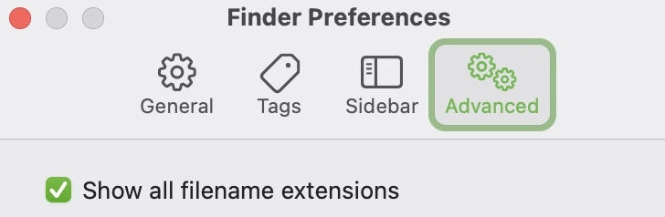
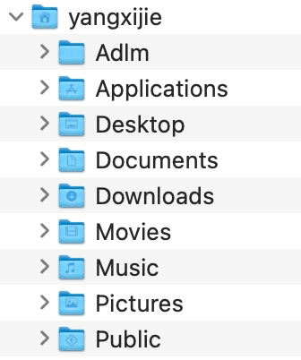
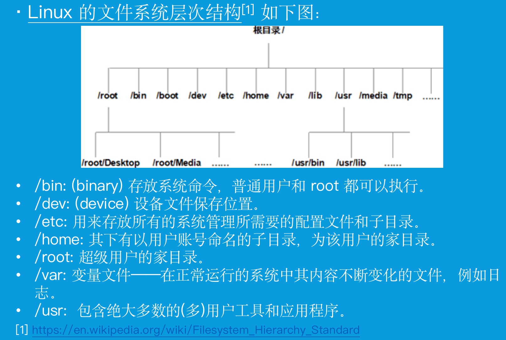
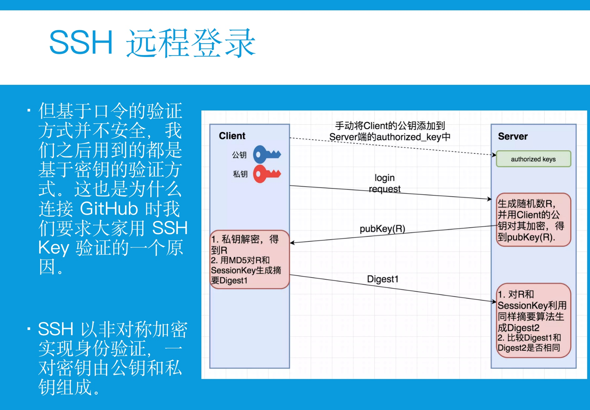

Linux 讲稿 - 2021信院联合暑培
讲座时间：小学期第三周周一（7.12）晚上 19:00
面向群体：信院科协的同学（需要得到培训；能够快速上手相关的开发工具），其他同学（有一些基础，希望能了解更多；科普的形式告诉大家开发的相关流程和一些常用的、好用的工具）
作者：电子系九字班 杨希杰
注：本讲稿持续更新
- Linux 讲稿 - 2021信院联合暑培
- 开场
- 引言
- 正文
- 总结
- 后记
- 作业答案
开场
自我介绍：大家好，我是无97班的杨希杰，一年前我加入电子系科协软件部。
一年前的这个时候我参加了电子系科协学长们组织的暑培，认真听下来，收获了不少东西。对电脑有了更多的认识，简单对前端后端有了了解，打开了我走向开发的道路。今年咱们信息院系合开，相信能让这次暑培做的更好。
一方面呢，希望大家了解与信息、开发相关、自己感兴趣的东西；另一方面呢，希望科协的同学认真听讲，因为暑培上讲的东西你可能很快就要用到。
为了防止讲座被打断，我不会在讲座的过程中看腾讯会议和微信的聊天。当然为了防止特殊情况的发生，我提前跟一些同学说好，如果突然翻车了短信联系我hh。
大家如果在讲座的过程中有疑问，可以在讲座休息的间隙或者讲座结束后来找我问问题。鼓励大家多思考，多提问题。这也是我第一次讲Linux相关的内容，可能也会有一些地方设计的不太好，大家有建议也欢迎在讲座后跟我反馈。
引言
今天我讲的主题是Linux，但是呢，我可能前四十分钟都不会提到Linux本身。我会从程序讲起，说说电脑操作系统，聊聊大家都用电脑来做什么；给大家补充一些基础的概念。之后我会跟大家讲讲Linux的获取和使用。希望大家通过今天的课程，一方面是对自己的电脑和信息知识有一个补充，另一方面是对开发的基础工具有一些简单的了解。
正文
什么是程序
（软件相当于一个系统，有输入有输出）面对你面前的电脑，你如何使用它呢？仔细想想，我们其实都是在使用一些应用程序。比如备忘录，比如Microsoft Word，比如浏览器，比如一些游戏。它们都是软件。再往下想一层，我们如何去使用这些软件呢？当然是键盘和鼠标；但只有键盘和鼠标不够对吧，还得有显示器。那我们其实可以将一个软件看成一个系统，它有输入，有输出；输入是键盘和鼠标，输出是显示器。
（打开GUI程序实际上是要找到程序的.app文件和.exe文件）让我们再把这个过程具体一下。要使用程序，我们首先要打开程序。那么如何打开程序呢？我们需要找到这个程序的文件或者找到其快捷方式。找到程序的位置在不同的操作系统有着不同的方式——在macOS上，我们可以找到电脑上的Applications文件夹，找到对应的后缀为.app的程序双击打开；在Windows上，我们需要找到自己当初安装软件的位置，找到对应的后缀为.exe的文件，双击打开运行。这时有的同学就会说，我使用macOS直接从程序坞和Dock栏点击程序图标就可以打开程序，使用Windows直接在开始菜单点击程序或者在桌面双击快捷方式就能打开；其实这些方式本质上都是电脑系统会帮你找到对应的.app文件和.exe文件，快捷方式或者从Dock栏打开只是方便你打开程序的方式。
（GUI程序的输入和输出）再来看看输入吧。输入有两种，键盘 和 鼠标。我们打开备忘录，随便敲击一些文字上去，这时输入设备是键盘；我们通过鼠标点击移动光标位置，这时输入是鼠标的基本操作；我们还可以右键鼠标或者滑动页面，或者拖动鼠标选中内容，这些都是鼠标的一些高级操作。这些操作能让你做什么呢，能让你告诉正在使用的程序你想做什么。点击变更光标位置，右键调出菜单，滑动让页面移动，按住选中内容——这些都是程序帮你处理的结果（输出）。不过为什么你能看到这些输出和结果呢？这是因为电脑系统帮你把这些结果（输出）以画图的形式呈现在了你的显示器上。比如，在我的MacBook上，对软件的操作经过macOS的处理（比如通过CPU计算鼠标的位置），再经过GPU（集成显卡）的渲染，最终在屏幕上呈现了软件的结果（输出）。
（GUI程序是有图形界面的程序）我们将这些软件称作GUI应用（GUI, Graphical User Interface, 图形用户界面），因为你对这些应用程序的输入和输出是通过图形的方式呈现的。这是我们最常用的软件，因为它们最符合我们的直觉。
总结
OK，我们花大概几分钟的时间复习了大家也许从小学时候就非常熟悉的事情。虽然可能确实很简单，但是这些简单的东西叠加起来，把其中的思想抽出来，我相信你会对使用电脑这件事情有更好的理解。提炼一下思想——我们使用电脑实际上是在各种各样的程序，我们可以通过输入告诉程序我们想做的事情，程序处理之后将结果呈现给我们。
我们已经对程序有了简单的了解，接下来我们再认识一下操作系统吧，毕竟那么多应用程序是跑在操作系统上的。
操作系统和常见的GUI操作系统
（操作系统是什么）操作系统（Operating System, OS）是管理计算机硬件与软件资源的计算机程序。操作系统也提供一个让用户与系统交互的操作界面。（来自操作系统百度百科）
（操作系统和软硬件的连接）也就是说，操作系统下接电脑的硬件资源（CPU（用来进行执行指令和进行运算）、GPU（用来进行渲染工作（渲染就是画图ww）、硬盘（用来存储各种各样的资源），外设（如鼠标/键盘/LED/屏幕什么的）），上接一堆的应用程序（就是我们常用的那些）。定义说操作系统也是一种程序，是的，它也接受输入输出，其实你对程序的输入输出都先经过操作系统，再到达上层的应用程序的。
（GUI操作系统）这就是操作系统，那么什么是GUI操作系统呢？能让你用鼠标点击，用屏幕呈现图形的操作系统就是GUI系统。现在市面上主要有两种这样的电脑系统，一种是Windows系列，其以出色的兼容性和丰富的软件市场有着很高的使用率，目前最新的系统是Windows 10，当然Windows 11也在路上了是吧；另一种是macOS系列，其以更人性化和Apple的服务得到一部分群体的青睐，目前最新的系统是macOS Big Sur，新系统也马上要发布了。当然Harmony OS可能也要来了是吧，相信大家都很期待。
总结
我们刚刚简单介绍了操作系统，知道了操作系统连接着硬件和软件，将用户的输入发送给程序，将程序的运行结果返回给用户。
接下来，为了引出更一般的命令行程序，我们需要先对操作系统的文件系统、路径、文件有一些基本的认识。
文件
（文件引言）我们在使用程序的时候，很多时候都是对文件进行操作。比如Microsoft Word，我们可以对.docx文件进行操作，在完成编辑之后，导出.pdf文件；比如音乐播放器，实际上就是打开音乐文件（.mp3 .wav）。刚刚说了.app程序和.exe程序，这些本质上也是文件啦。这些文件本质上是什么呢，它们在计算机里面存在哪里呢？我们接下来就来介绍这部分的内容。
（计算机中文件的本质）我们想在大脑中存储一个东西，这个原理肯定很复杂，这方面的研究也是当前的前沿科研领域。但是计算机存储是非常简单的，只有0和1；稍微讲一些硬件的东西，如果是机械磁盘，磁介质的两种磁化方式对应0和1；如果是SSD，电容充电与否为0和1；那么如何读取数据呢，一个bit的数据传输线上，0为低电平，1为高电平。
总结一下刚刚说的，你在计算机中处理的文件，只有一种，里面写满了0和1。那么你如何才能通过这些0和1得到你想要的文件内容呢？这时就需要程序出手了。
纯文本文件
学过编程的同学大概会知道编码。比如如下的一个.txt文件：
Hello, world!
这个文件存在你的硬盘上，本质上是一串0和1。如下所示（共 14 Byte）：
注：可以使用xxd -b <file>命令来查看文件的内容（0和1）
01001000 01100101 01101100 01101100 01101111 00101100 00100000 01110111 01101111 01110010 01101100 01100100 00100001 00001010
（使用对应的编码读取纯文本文件）由于这个文件是纯文本文件，所以我们需要通过编码来确定里面所写的字符串的具体内容。该文件使用UTF-8编码，通过查看UTF-8的编码编码表（由于我们只写了英文字符，而英文字符部分UTF-8兼容ASCII，我们可以直接查看ASCII码），我们可以将上述文本和编码一一对应。
（常见的纯文本文件）上面我们所说的是纯文本文件，其实你所接触的绝大多数与文字相关的文件都是纯文本文件。比如刚刚所说的 .txt，常用的 .md（Markdown风格文本），还有大家编写代码可能遇到的 .c .h .cpp .py，写过网页的同学 应该也会回忆起来 .html .xml这些格式文本，还有一些配置文件和不带后缀的文件，也都是纯文本文件。打开它们需要一个能读懂相应文字 / 字符编码的软件或程序，一般这种程序的名字是文本编辑器。
媒体文件
文件只有一种，就是0和1的串。分类刚刚说了一种，是纯文本文件。那么如何存储一些媒体文件呢？或者说，如何把媒体映射成0和1的串呢？举个例子，一张电子图片，本质上是一个二维矩阵，存储着每个像素的色彩——我们先用两个整数分别表示矩阵的行和列，然后使用一连串的整数，表示从第一块像素到最后一块像素的色彩值；再将这些整数都变成0和1，我们就得到了用0和1表示的媒体文件；电子音乐也是一样的，我们可以对连续的音乐响度进行采样，将采样得到的数值变为0和1，挨个排起来，就得到了0和1组成的一首音乐；我们将这个过程称为编码。不过我们当然要约定如何打开这些文件了，比如按照刚刚的思路，如果有个软件想打开某种图片，它得知道这个图片是怎么生成的，然后用相反的方式进行解码。也就是说，这种媒体文件，需要专门开发的程序来打开，对文件做解析才能得到对人来说有意义的媒体内容。
（常见的媒体文件）其实最常见的媒体文件就是图片（.jpg .png .raw）、视频（.h264 .hevc .yuv）、音乐（.mp3 .flac .wav）了。当然将这些媒体组合起来的文件也都是媒体文件。比如你可以在Microsoft Word里面插入图片，在Microsoft Powerpoint里插入音乐，那么.docx .pptx当然算是这类文件；.pdf当然也算。把视频和音频轨道组装在一起的封装文件，比如.mp4，也是这样的文件；压缩文件.zip .rar也算是。
（通过文件后缀决定打开方式）那么如何打开这类文件呢？本质都是0和1，怎么知道里面是音乐还是视频呢？这就要说到后缀名了。每个文件都有一个名字，比如TODO.txt Journey.mp3 剪辑导出.mp4，名字一般分为两部分，.前面是文件名，.后面是后缀名。操作系统通过后缀名来决定这个文件可以用什么程序来打开；将一个文件送入一个应用程序，这个应用程序也会根据后缀名来决定如何处理这个文件；比如上面的三个文件。所以说后缀名还是很重要的。（注：后缀名是文件名字的一部分）
程序
然后来说说最后一种0和1组成的文件，程序。如果大家学过数字逻辑与处理器基础或者计算机组成架构或者操作系统这样的课程、对处理器（CPU）的工作方式有一定的了解，那么会知道——我们用代码编写的程序经过编译链接会变成一系列的机器指令；这些机器指令一条就是64个（或32个）0和1，不同的指令顺序排列，就变成了程序（如.exe文件）。打开一个程序，本质上是开始执行程序中机器码的过程。（讲到这里我们其实和命令行程序已经非常接近了！）
总结
做一个小结，计算机中文件存储在硬盘里面，本质上都是0和1。如果分类可以大致分为纯文本文件（由字符编码组成）、媒体文件（由按照一定方式组织的媒体信息构成）、程序（由CPU可以直接运行的机器码构成）。
文件的名字一般由两部分构成，前半部分为可以随便起的文件名称，后半部分用后缀名来表示该文件的类型，一般由生成该文件的软件进行确定，用户不必更改；操作系统则通过文件后缀名决定可以用哪个 / 些程序来打开该文件。
接下来我们需要来认识文件在操作系统的文件系统中到底放在哪里，初步对文件系统有一个了解。
文件系统
不同操作系统的文件系统有所不同，但思想都是一样的。我会主要以macOS（类Unix操作系统）为例说明文件路径。Windows也是类似的。
对Finder做一些配置
在macOS中，你需要对Finder做一些设置才能看到文件的路径。
在Finder的 偏好设置 - 高级 中打开Show all filename extensions

在Finder的 偏好设置 - 边栏 中Favorites勾选像房子一样的家目录，在Locations勾选硬盘Hard Disk。
查看 根目录 家目录
这时我们来到硬盘电脑上的硬盘，继续做一些调整：
⌘2：按照列表查看
⌥⌘S：打开边栏
⌥⌘P：打开显示路径
（认识文件系统的树状结构）可以看到，你的所有文件和文件夹都在你的硬盘下。具体来看，Applications文件夹里面放了不少自己安装的应用，而自己最常用的文件其实都放在家目录下（一个房子的图标）。


写路径
我们可以看到这样的树状结构，通过这样的树状结构我们可以写出文件夹或文件的路径。（在macOS上可以通过⌘I或下方路径栏查看路径，或者直接用 ⇧⌘C 拷贝路径；Windows则可以通过资源管理器上方的路径栏查看路径，点击后右键即可复制）
绝对路径
比如我的家目录：/Users/yangxijie
比如我桌面上的待办事项：/Users/yangxijie/Desktop/TODO.txt
（根目录）这里，路径的第一个/表示根目录，根目录就是你的硬盘。我们马上就要开始认识Linux了（吐槽 终于提到了一次），macOS和Linux操作系统都是类Unix操作系统（我们后面会讲），它们所使用的文件系统都是以根目录开始（Windows则是用盘符来区分）
（家目录）那么家目录又是什么呢？在macOS中打开 系统偏好设置 - 用户和群组 可以看到当前的用户。现在大家的电脑可能都是一人一台，但可能十年前，还会出现几个人合用电脑的情况，这时就会创建多个用户，每个用户都有一个家目录用来放自己的文件。（在后面我们讲到共享服务器资源的时候，也会提到多用户的管理）
家目录没什么神奇的，就是一个文件夹，不过由于经常用，所以我们写路径的时候可以用~来代替家目录。比如我桌面上的待办事项：~/Desktop/TODO.txt
相对路径
上面我们所说的都是绝对路径，路径从根目录（或者盘符）开始。还有一种路径的写法是相对路径，比如我当前在桌面，那么我描述桌面上的待办事项就可以用相对路径：./TODO.txt；描述我下载文件夹中的文件可以用：../Downloads/MATLAB大作业.zip
这里.指当前的文件夹，..指上级文件夹（桌面和下载文件夹都在家目录下，它们是同级的）；上上级可以写作../..
隐藏文件
上面所说的文件系统里只有你能看到的文件，我们还需要了解更多——我们使用快捷键 ⌘⇧. 让Finder打开隐藏文件。隐藏文件一般指以.开头的文件和文件夹；也有一些文件或文件夹虽然不由.开头，但也被系统隐藏。

这些文件一般都比较核心，如果用户不小心删掉或者什么可能会对电脑操作系统造成一些影响，所以大家接触这些文件的时候要尽量小心哦。
在打开隐藏文件后的根目录下，我们发现了一个文件夹/bin，bin binary 二进制……打开看看，发现里面好像有一堆可执行程序的样子。（exec executable 可执行）
——好了 我们终于要接触到命令行程序和命令行了。
补充
在macOS上，.app后缀的文件其实是一个文件夹，你可以右键显示包内容查看这个文件夹里面都有什么。
总结
这一小节我们了解了类Unix操作系统（如macOS、Linux）的文件系统，知道了根目录和家目录，能够写出文件和文件夹的绝对路径和相对路径。
在/bin文件夹下我们发现了一些看起来可以执行的程序。接下来我们将使用终端、shell和这些命令行程序进行交互。
命令行程序
终端和shell
终端是一个应用程序，其可以开启多个shell。shell也是一个程序，你可以让shell来处理你的命令。
（打开终端和shell）我这边打开我电脑上安装的终端iTerm 2，它是图形化的，你可以在应用程序文件夹找到它。那么如何在终端中开启shell呢？只要打开了终端，终端会自动帮你打开一个shell；想要更多的shell，可以多键标签页（或分屏）。
shell 功能 解析你输入的命令
通过绝对路径打开命令行程序并使用
（通过/bin/date程序来认识命令行程序）那么shell能做什么呢？第一个功能——通过绝对路径打开命令行程序。比如刚刚看到了一个程序名为date，我们可以写出其绝对路径，复制到终端的shell中，然后敲击回车。
$ /bin/date
Thu Jul 8 16:35:04 CST 2021
这个程序打开之后，没有输入，产生了一个输出，输出为一行字符串，为当前的系统时间。
当然我们也可以给它一些输入：
$ /bin/date "+DATE: %Y-%m-%d%nTIME: %H:%M:%S"
DATE: 2021-07-08
TIME: 16:36:41
这里我们发现在程序的绝对路径和输入（一个用来格式化的字符串）之间，有一个空格。这一个空格作为shell区分程序和输入（参数）的分隔符。
我们还可以输入一些其他的参数，比如-r：
-r seconds - Print the date and time represented by seconds, where seconds is the number of seconds since the Epoch (00:00:00 UTC, January 1, 1970)
-r filename - Print the date and time of the last modification of filename.
比如我希望看看自计算机的零时过10亿秒后的时间是多少，也看看我桌面上TODO.txt什么时候更新过：
$ /bin/date -r 1000000000
Sun Sep 9 09:46:40 CST 2001
$ /bin/date -r /Users/yangxijie/Desktop/TODO.txt
Thu Jul 8 16:48:19 CST 2021
总结一下，我们刚刚认识了一个命令行程序/bin/date。其直接运行可以打印当前的系统时间；给一些参数（相当于特殊的输入）可以执行一些操作，比如查看文件的最后修改时间、比如做一些计算将秒转为格式化的时间；最终返回一个字符串。终端则通过操作系统、将这个字符串显示在你的屏幕上。可以看到，命令行程序一般将字符串作为输入和输出；输入输出这一点和GUI程序是一样的。
通过命令让shell来解析你要调用的程序
/bin/date这个程序，如果我们没有在之前机缘巧合的在/bin目录下发现它，我们还怎么使用终端来查看系统时间呢？事实上，我要调用一个程序，如果总是写它的绝对路径，那不是很累吗？date这个程序还好，但如果是其他放在多级文件下的数据，那不是写路径就要写好久吗？
比较直观的认识是，我们直接输入这个程序的名字date，然后这个程序被调用。来试试可否？
$ date
我们发现是可以的。不过这背后是什么原理呢？其实是shell立了大功劳。我们刚刚说到，你可以在shell中输入一个命令行程序的绝对路径以调用打开这个程序。但其实shell的作用不是识别路径，而是解析字符串。当你输入一串字符，shell就会去找这个字符串对应的程序。如果这个字符串是一个绝对路径，那shell当然可以直接找到你想调用的程序；如果是一个单词，shell会在环境变量中找这个单词对应的程序——因此，你可以通过一个单词方便的调用一个命令行程序（如果这个程序在环境变量中的话）。
那么什么是环境变量呢？其实就是一系列存放命令行程序的文件夹。使用下面的命令可以查看环境变量：
$ /bin/echo $PATH
/usr/local/sbin:/usr/local/bin:/usr/local/sbin:/usr/local/bin:/Users/yangxijie/opt/anaconda3/condabin:/usr/local/sbin:/usr/local/bin:/Users/yangxijie/bin:/usr/local/bin:/usr/local/bin:/usr/bin:/bin:/usr/sbin:/sbin:/Applications/VMware Fusion.app/Contents/Public:/Library/TeX/texbin:/usr/local/aria2/bin:/usr/local/share/dotnet:~/.dotnet/tools:/Library/Apple/usr/bin:/Library/Frameworks/Mono.framework/Versions/Current/Commands:/Applications/Visual Studio Code.app/Cont
我们发现这确实是一系列路径，使用冒号隔开。在其中我们发现了/bin，也就是说，当你输入一个单词的时候，shell就会去环境变量下找这个单词对应的程序，从而确定你要调用的程序。
由于/bin/echo和/bin/date都在/bin文件夹下，我们可以不用写绝对路径，而是用单词echo date来告诉shell我们想打开的命令行程序。当可以省略时，我们不妨将这些单词成为命令；有时也把在shell中输入的一整行字符串称作命令。也正是因此，我们将这些二进制的程序称作命令行程序。
我们之后都会使用命令这个词语，但别忘了本质上你使用命令是在调用程序并给这个程序提供输入/参数。
再解释一下上面的/bin/echo $PATH。echo程序能够打印出你输入的东西，一般来说是原封不动；但如果你的输入是shell变量（用$开头表示shell中的一个变量，$PATH指的就是shell的环境变量），那么echo程序就会打印出这个变量的值。像上面那样。
$ date
Fri Jul 9 15:00:27 CST 2021
$ echo hhhhh
hhhhh
$ a=1
$ echo a
a
$ echo $a
1
自己写命令行程序
刚刚我们初识了一些类Unix系统自带的命令行程序，当然这些程序有很多，大家如果熟练掌握，不论是在以后编写代码还是实际开发的过程中都会有很大的效率提升。我们之后也会介绍一些比较重要的命令行程序。不过这时有些同学就会问了，「我能编写这样的命令行程序吗？」
当然可以了！相信在座的大多数同学都有写过C和C++程序的经历，接下来我们尝试用终端和shell来写一个自己的命令行程序。我们希望能在桌面上新建一个文件夹，在这个文件夹内编写cpp代码，然后将其编译为一个可执行文件，并执行它。
切换路径
使用pwd（print working directory）命令可以获得当前shell的工作路径。像我的终端经过配置，所以这个路径可以直接看到。使用cd（change directory）路径可以更换当前路径。在当前路径下，可以使用mkdir（make directory）命令创建文件夹，文件夹也可以以相对路径的形式呈现。ls（list）命令则可以列出当前目录下的所有文件和文件夹。
$ pwd
/Users/yangxijie
$ ls
Applications
Desktop
Documents
Downloads
…
$ cd Desktop
$ ls
$ cd CODE
cd: no such file or directory: CODE
$ mkdir CODE
$ cd CODE
$ pwd
/Users/yangxijie/desktop/CODE
这样我们就成功切换了shell的工作路径（当前路径）。
编写代码
我们想写下面的这个小程序（输入你的名字，程序跟你打招呼）：
#include<cstdio>
int main(){
char name[100];
printf("Please input your name: ");
scanf("%s", name);
printf("Hello, %s", name);
}
先用命令行程序的文本编辑器vim来将上面这一段代码写入文件SayHello.cpp（接收一个参数表示你要新建的纯文本文件的名字）：
$ vim SayHello.cpp
进入vim编辑器之后，我们按i进入编辑模式，将上面这段代码复制到vim中。这时我们完成了编辑要保存退出，先按esc退出编辑模式，再按:以输入编辑器的选项，我们使用wq保存退出（write quit）。（注，也可以先按⎋退出编辑模式，再用ZZ退出）
不妨来看看文件里面写了什么，cat命令可以用来查看纯文本文件：
$ cat SayHello.cpp
#include<cstdio>
int main(){
char name[100];
printf("Please input your name: ");
scanf("%s", name);
printf("Hello, %s", name);
}
补充：关于vim的使用方式，我简单做了整理，大家可以进行参考：vim学习笔记。记得，vim是一款查看器和编辑器，它能做到的事情和你电脑上文本编辑器所能做到的事情是一样的。
编译链接 获得命令行程序并执行
在macOS上，我这边使用g++编译器来做这件事情。第一个参数是输入的代码文件，后面-o参数是输出的文件名。在windows上，可执行文件（命令行程序）一般以.exe为后缀；但在类Unix操作系统上，可执行文件一般不设置后缀。
$ g++ SayHello.cpp -o "SayHello"
我们可以使用绝对路径或相对路径来调用这个程序。（但注意，这里不能直接输单词，因为shell收到单词会在环境变量中找对应的程序，而你自己写的程序还没有添加到环境变量中）
$ ls
SayHello SayHello.cpp
$ /Users/yangxijie/desktop/CODE/SayHello
…
$ SayHello
zsh: command not found: SayHello
$ ./SayHello
…
补充：在macOS上使用clang和g++可能需要安装Command Line Tools
常用的shell命令
常用的shell命令（Linux命令）有很多，下面写的是一些比较常见的。当然大家之后使用服务器还会使用到各种各样的命令，可以参考菜鸟教程｜Linux，推荐大家直接百度查。
与工作路径相关
pwd # 显示当前工作路径
cd # 切换当前路径
cd .. # 返回上级路径
cd - # 切换到上个路径
ls # 列出当前路径下的文件
ls -a # 包含隐藏文件
ls -l # 查看详细信息
ls -al # 包含隐藏文件且查看详细信息
与文件操作相关
rm # 删除文件 因为会直接删除 所以小心使用
rm -d testDirectory # 删除空文件夹
rm -rf testDirectory # 删除文件夹 谨慎使用
mv # 移动文件 原地移动相当于重命名
cp # 复制文件
find # 查找文件
find . -name "*.cpp" -exec cp {} cpp-files \; # 查找当前文件夹下后缀名为`.cpp`的文件并将其复制到当前路径下的 cpp-files/ 文件夹中
与纯文本相关
vim # 好用的命令行文本编辑器
touch # 新建文本文件
cat <file> # 查看文件内容
head <file> # 查看文件的前十行
与命令相关
clear # 清空当前的终端界面
history # 查看历史命令
上/下键 # 调出之前执行的命令
man # 查看系统内关于某个命令的帮助
xx --help (-h) # 查看某个命令行程序内置的帮助
与进程相关
ps # report a snapshot of the current processes
kill # send a signal to a process
ps可以查看当前的进程，kill可以给进程发送一些信号。由于我还没上过操作系统，对这些不是特别了解，大家可以直接用man命令来查看ps和kill的帮助（或百度）
其他shell操作
which where
which # 查看shell如何解析你的输入
where # 查看shell可能如何解析你的输入，第一条为which的结果
输入输出流重定向
还记得echo吗？
touch my.txt
echo "hello world" > my.txt # 将输出覆盖到文件
echo "hhhh" > my.txt # 将输出覆盖到文件
echo "hahahaha" >> my.txt # 将输出追加到文件
mkdir ha/haha 2> /dev/null # 忽略错误
mkdir ha/haha 2>> error.log # 追加错误到日志文件中
〇 重定向符号
>：输出重定向到一个文件或设备 覆盖原来的文件>!：输出重定向到一个文件或设备 强制覆盖原来的文件>>：输出重定向到一个文件或设备 追加原来的文件<：输入重定向到一个程序（如果你要做数算题，输入数据的时候可能会用到）- 注：这里文件指的是纯文本文件；设备中有一个比较特殊的是
/dev/null，如果你不需要输出的信息，你可以将信息重定向到这里
〇 输入和输出表示：主要有三种输出入的状况，分别是：
- 标准输入；代码为
0；或称为stdin；使用的方式为< - 标准输出：代码为
1；或称为stdout；使用的方式为1> - 错误输出：代码为
2；或称为stderr；使用的方式为2>
（注：上述内容部分摘自Linux中重定向及管道）
管道
|: 上一个命令（程序）的输出作为下一个命令的输入
比如我想看看我刚刚创建了什么文件夹来着：我可以一条一条翻，但是我也可以搜索啊！
history
history | grep "mkdir"
使用终端的快捷键⌃R也可以快速查找之前的命令。
grep
$ man grep
The grep utility searches any given input files, selecting lines that match one or more patterns.
By default, a pattern matches an input line if the regular expression (RE) in the patternmatches the input line without its trailing newline.
$ echo "123abc456" | grep "[0-9]"
123abc456（1 2 3 4 5 6得到高亮）
$ echo "123abc456" | grep "[0-9]*"
123abc456（123 456得到高亮）
$ echo "123abc456" | grep "[a-z]*"
123abc456（abc得到高亮）
$ grep "[0-9]" error.log
正则表达式可以用来搜索并进一步提取你想要的内容。正则表达式也是开发同学的必备技能，我推荐大家大家看菜鸟教程｜正则表达式；还有一个正则表达测试的网站https://regexr.com/5mtrl
⌃C
结束当前正在执行的程序；命令输到一半也用它来重新输。
⌃D
退出一个shell。
$ echo $SHELL
/bin/zsh
$ bash
bash-3.2$
我们可以通过⌃D退出。在后面连接远程shell的时候，也可以通过这种方式退出。
空格
举例：创建一个含有空格的文件夹，结果发现创建了两个
在空格之前加入\转义；或用 "" '' 包裹含有空格的文件和文件夹
通配符
* 匹配任意多字符
? 匹配单个字符
$ ls *.cpp # 列出当前文件夹下的所有cpp文件
$ rm *.log # 删除当前文件夹下的所有日志文件
tab和右键补全
当你在shell中输入一些东西之后，按tab可以获取补全，或多次按tab查看shell的提示；如果做了shell的个性化配置，按右键也根据历史命令进行补全。
文件和文件夹权限
ls -l
可以使用 ls -l file 查看文件/文件夹的权限。
$ ls -l test.txt
-rw-r--r-- 1 re re 56 Jul 5 11:00 test.txt
第 1 位：文件类型。d 表示文件夹，- 表示文件；
第 2-4 位：表示这个文件的owner拥有的权限；
第 5-7 位：表示和这个文件owner所在同一个组的用户所具有的权限；
第 8-10 位：其他用户所具有的权限；
r: read 读，w: write 写，x: execute 执行，-: 无权限。
chmod
可以使用chmod修改文件和文件夹的权限（chmod, change mode, 修改文件、文件夹权限）：
1 文字设定法
$ chmod [u|g|o|a] [+|-|=] [rwx] file
$ chmod ug+w,o-x a.txt # owner及同组增加写权限 其他用户删除执行权限
u: owner，g: 同组用户， o: 其他用户，a: 所有用户
2 数字设定法
$ chmod [mode] file
$ chmod 644 my.txt # owner可读写 同组和其他用户只可读。
mode为 3 位八进制数，每位由各权限按权重相加得到。从左往右依次代表owner、同组、其他用户的权限rwx对应的权重分别是4,2,1
注：大家以后在使用这个命令的时候，虽然可以一次把权限给的多一些，但最好还是小心一点，能少一点就少一点，以防止一些可能发生的「灾难」。
用户权限
shell脚本
如果我们一次执行一个命令，那用手敲的可能来的快一点。但是如果要一次执行多条命令，那可能还是写一个脚本一次性执行来的快一点。
脚本（script），是使用一种特定的描述性语言，依据一定的格式编写的可执行文件。（来自百度百科）
这里所说的可执行文件和之前的命令行程序是有区别的；脚本本质上是还是纯文本文件，它能执行是因为有解释器来对其中每一行命令做解析。比如shell 脚本就由shell来解析；python 脚本 / 程序就由python解释器来解析。
尝试编写shell脚本
比如我们希望创建这样一个脚本——来批量显示当前文件夹下的所有文件和文件夹。注意，这不是ls命令，我想要递归显示。
我们使用下面的shell脚本kddeisz | GitHub | tree.sh做一个演示：
#!/usr/bin/env bash
shopt -s nullglob
dir_count=0
file_count=0
traverse() {
dir_count=$(($dir_count + 1))
local directory=$1
local prefix=$2
local children=($directory/*)
local child_count=${#children[@]}
for idx in "${!children[@]}"; do
local child=${children[$idx]// /\\ }
child=${child##*/}
local child_prefix="│ "
local pointer="├── "
if [ $idx -eq $((child_count - 1)) ]; then
pointer="└── "
child_prefix=" "
fi
echo "${prefix}${pointer}$child"
[ -d "$directory/$child" ] &&
traverse "$directory/$child" "${prefix}$child_prefix" ||
file_count=$((file_count + 1))
done
}
root="."
[ "$#" -ne 0 ] && root="$1"
echo $root
traverse $root ""
echo
echo "$(($dir_count - 1)) directories, $file_count files"
shopt -u nullglob
可以发现这个还是非常难理解的。
$ vim tree.sh # 一般shell脚本的后缀为`.sh`
$ ./tree.sh # 执行shell脚本
zsh: permission denied: ./tree.sh
$ chmod +x tree.sh
$ ./tree.sh
.
├── SayHello
├── SayHello.cpp
└── tree.sh
0 directories, 3 files
shell脚本的优劣
优点：你可以将多条命令写进shell脚本，一次执行。
缺点：其并非编程语言，一些语法（甚至不能称作语法）晦涩难懂，缺少相关的debug工具（有是有）。
我推荐大家在进行批处理的时候直接编写python脚本，现在这个时代，哪台机器上还没有个Python3呢？写过python的人都知道python写起来多舒服吧。我们可以在上面的脚本作者的仓库GitHub | kddeisz | tree中找到tree.py，点进去一看，舒服多了ww。
当然，有些python可能做不到的事情，那你就用shell脚本写喽。我这里也不详细说了，大家用到的时候可以自己查。学习如何编写shell脚本可以查看Missing Semester｜Shell 工具和脚本
shell配置文件
shell是谁在用呢。当然是你在用了！配置文件写的爽，你用shell用起来就爽；每次shell开启的时候，都会先加载这个配置文件。我们不妨看看我电脑上的zsh配置文件：
$ cat ~/.zshrc
……
plugins=(
git
zsh-autosuggestions
zsh-syntax-highlighting
)
……
export HOMEBREW_BOTTLE_DOMAIN=https://mirrors.tuna.tsinghua.edu.cn/homebrew-bottles
export PATH="/usr/local/bin:$PATH"
export PATH="/usr/local/sbin:$PATH"
……
alias ga="git add "
alias gc="git commit -m "
alias glg="git log --color --graph --pretty=format:'%Cred%h%Creset -%C(yellow)%d%Creset %s %Cgreen(%cr) %C(bold blue)<%an>%Creset' --abbrev-commit"
alias gs='git status'
……
alias ll="ls -alF"
……
export LANG=en_US.UTF-8
export LC_ALL=en_US.UTF-8
像我呢，给我的shell添加了一些插件；更换了包管理工具（后面会讲到什么是包管理）brew的下载地址；添加了一些环境变量；设置了Git、ls的快捷键（alias）；为了避免一些GBK带来的问题，把系统的编码全部设置为UTF-8……
你也可以自己修改你的配置文件——按照自己喜欢的来，网上也有很多可以参考的配置。当然了，改完了记得要让它生效：
$ source ~/.zshrc
当然直接重启终端或者shell也完全OK。
补充：shell有很多种的。常用的可能有bash、zsh…当然了功能没什么区别，都是解析你输入的命令与命令行程序做交互，但可能一些设计细节上会有一些不同。配置文件也会有不同，比如zsh的配置文件在~/.zshrc，bash的配置文件在~/.bash_profile。
补充
如果大家想对终端、shell、命令行深入了解，可以查看下面的课程的前五节课（全看当然最好啦）（这是对我帮助很大的一门课程）：
计算机教育中缺失的一课 The Missing Semester of Your CS Education 中文版
这门课程的简介是这样的：
大学里的计算机课程通常专注于讲授从操作系统到机器学习这些学院派的课程或主题，而对于如何精通工具这一主题则往往会留给学生自行探索。
在这个系列课程中，我们讲授命令行、强大的文本编辑器的使用、使用版本控制系统提供的多种特性等等。
学生在他们受教育阶段就会和这些工具朝夕相处（在他们的职业生涯中更是这样）。
因此，花时间打磨使用这些工具的能力并能够最终熟练地、流畅地使用它们是非常有必要的。
精通这些工具不仅可以帮助您更快的使用工具完成任务，并且可以帮助您解决在之前看来似乎无比复杂的问题。
命令行 与 GUI - Linux的常见发行版本
上面我们聊了聊GUI程序、引入一般的程序（输入输出）、认识了类Unix操作系统的文件系统、使用了命令行程序；有了这些基础，我想大家已经有了认识Linux的基础了。下面就让我们来请出Linux吧——
GUI 与 命令行
不过要先解决一个小问题，我们已经有了GUI程序，看时间右上角就可以看、不需要date，文本编辑系统有自带的文本编辑、不需要vim，使用IDE（集成开发环境）、一个快捷键就能帮你运行程序、而且还有代码高亮、语法检测等多种功能；那么为什么要用命令行程序？
（GUI程序占用的资源较多）考察GUI程序和命令行程序，GUI程序操作方便，但其实它占用的资源非常多（看我晃动鼠标，CPU的占用率就开始上升，只是晃动哦），至少机器得有个集成显卡来计算屏幕上什么时候显示什么吧；而命令行程序，其只是处理字符串的输入和输出，这样占用的资源是非常少的，所以效率高。
（历史上先出现的是命令行操作系统）从历史上来说，最先面世的电脑操作系统肯定只有命令行的输入和输出；后来为了方便人们操作；加上了可以移动的光标和鼠标。事实上，GUI的操作系统肯定也是支持使用命令行程序的——我刚刚在演示时使用的操作系统是macOS，它就有终端，有shell，可以处理你敲入的命令。
虽然GUI已经很方便了，但当我们追求计算机计算意义上的高效时，我们还是会使用只有命令行的操作系统。最常见只有命令行的操作系统就是Linux；或者我们有一些特殊的需求无法在macOS和Windows上完成时，我们可能也会使用Linux。下面我就开始真正讲Linux了。
Linux 历史概述
（注：本小节内容部分参考自 电子系2020年暑培 Linux部分 无76 孙志尧）
Linux 和 Unix
首先明确，Linux是一个操作系统，那它就有自己的内核。内核指的是一个提供设备驱动、文件系统、进程管理、网络通信等功能的系统软件，内核并不是一套完整的操作系统，它只是操作系统的核心。Linux 内核最初由 Linus Torvalds 编写。
之前我们一直提到类Unix操作系统，大家看下面这张图可能马上就明白了。
Linux 是一个类似 Unix 的操作系统，Unix 要早于 Linux，Linux 的初衷就是要替代 UNIX，并在功能和用户体验上进行优化，所以 Linux 模仿/改进了 UNIX（但并没有抄袭 UNIX 的源码），使得 Linux 在外观和交互上与 UNIX 非常类似。——C语言中文网 | Linux和UNIX的关系及区别
相比于 UNIX，Linux 最大的创新是开源免费，这是它能够蓬勃发展的最重要原因。

（从表中我们也可以看到，macOS也是类Unix操作系统，所以macOS终端的体验和Linux基本上是一致的）
Linux 发行版
一些组织或厂商将 Linux 内核与各种软件和文档包装起来，并提供系统安装界面和系统配置、设定与管理工具，就构成了 Linux的发行版本。常见的发行版本有很多，比如Ubuntu CentOS…
我们使用的也是这些Linux发行版，一般我们说的实际使用的Linux操作系统指的也是这些Linux发行版。
补充：Linux也有像macOS和Windows一样的GUI版，相当于你在现在的电脑上刷一个新的操作系统；但我不是很推荐大家使用，除非你是Linux发烧友，也愿意花时间去学。大家感兴趣的话自己百度Linux 桌面 发行版吧。我们一般说的Linux都是只有命令行的。
Linux 文件系统
在Linux中，一切皆文件：
- 普通文件是文件；
- 目录是文件：目录文件包含了此目录中各个文件的文件名以及指向这些文件的指针，打开目录等同于打开目录文件；
- 硬件设备是文件：这些文件通常隐藏在
/dev目录下，当进行设备读取或外设交互时才会被使用； - 套接字（socket）是文件：套接字文件一般隐藏在
/var/run目录下，用于进程间的网络通信； - 符号链接（symbolic link）是文件：类似于的快捷方式，是指向另一文件的简介指针（也就是软链接）；
- 管道（pipe）是文件。

上手Linux
服务器
说了这么久，大家还没见到Linux，我不妨直接拿一台Linux来吧。
ssh root@106.13.128.69
好 这样我们就连接上了一台Linux，这个是为了演示前几天买的Linux ww。你说，操作系统下连硬件，硬件呢？？因为我买的是百度云在保定的服务器（什么是服务器我们之后会讲），所以差不多就是在西南方向吧。也就是说，我通过网络连接到这台Linux，就可以对其进行使用啦；使用的方法就是敲命令。
解释一下上面的命令：我是用本机的ssh命令（程序）与ip地址为106.13.128.69进行ssh协议的通讯，登陆用户为root。
SSH是较可靠，专为远程登录会话和其他网络服务提供安全性的协议。——百度百科ip地址需要查看你购买服务器的控制台。root用户拥有Linux服务器最高的权限，类似Windows上的管理员；输入密码之后就可以进入服务器啦

我们可以看到，由于只是演示，所以我买了配置较低的服务器，其CPU只有一核，进入服务器进行查看：
$ cat /proc/cpuinfo
……
model name : Intel(R) Xeon(R) Gold 6148 CPU @ 2.40GHz
……
（服务器配置）这块CPU应该是要比绝大多数人电脑上装的CPU是强很多的（虽然可能这台服务器只能使用这个CPU一个核的资源）。内存2G不算很大；存储盘40G SSD；操作系统用的是Ubuntu 20.04 LTS（LTS, long term support）。安全组是什么我们在之后讲端口的时候会讲。
好了这就是我们的Linux。Linux到手了，我们也能连接上了，接下来当然是要用Linux来做事情了。不过在这之前，我们先需要知道，一台云端的Linux服务器究竟能干什么。
补充：如果你之后也有购买服务器的需求，作为学生，我们可以以学生优惠在多个平台享受低至一折的优惠。可以查看GitHub ivmm | 教育优惠以获取更多信息。
其他方式
WSL
适用于
Linux的Windows子系统可让开发人员直接在Windows上按原样运行GNU/Linux环境（包括大多数命令行工具、实用工具和应用程序），且不会产生传统虚拟机或双启动设置开销。
具体安装请查看刘雪枫（xfgg）所写的WSL教程
虚拟机
操作系统作为软件和硬件的桥梁，不同的操作系统上肯定运行着不同的软件，下面也有着不同的硬件。也就是说，一般一个操作系统使用的硬件，可能并不能运行另一个操作系统。虚拟机则可以模拟出系统所需的硬件环境，从而在硬件上跑其他的操作系统。比如使用Mac的同学一般都会有一个虚拟机软件，用来开Windows虚拟机。
我们也可以使用虚拟机来装Linux。不过这时你装到的可能更多是图形界面的Linux。
Docker
Docker和虚拟机差不多，不过比虚拟机效率更高，占用的资源更少。我们这次暑培也有Docker相关的课程，大家到时候可以尝试使用Docker安装Linux系统。
配置ssh连接
无需密码登陆
ssh root@106.13.128.69
cd /root
chmod 700 .ssh
cd /root/.ssh
touch authorized_keys
chmod 600 authorized_keys
vim authorized_keys
然后将本地~/.ssh/id_rsa.pub中的全部内容复制到vim编辑器中, 保存退出即可
一般我们都用账号和密码来登陆；但是这样并不很安全，也许会有一些途径让别人探到你的密码。一种更安全的方式是使用密钥进行登陆。

给ssh配置端口和用户名
本机：
$ vim ~/.ssh/config
# add
host bdy
user root
hostname 106.13.128.69
$ ssh bdy # 不用每次都输ip地址了
云端Linux服务器的功能
刚刚我演示了我们之前讲过的一些命令行程序，这些程序当然可以用。不过我们是可以做一些更强的事情的。
这台机器上有硬盘，我可以把文件丢进去让别人访问——也许可以做个云盘；如果写了网站丢上去，那也许可以做个电商平台；CPU这么好，不妨装个python来跑机器学习的训练模型吧；如果再装个GPU，提高一下网络带宽，做视频剪辑的渲染农场也说不定？
云端Linux服务器和普通的电脑本质是一样的，只是它的CPU更强，系统是Linux，二十四小时开机，随便你怎么折腾，不在你身边，风扇怎么转也吵不到你。跑个机器学习动辄几天几周，扔到服务器上去跑吧；有个网站想让别人二十四小时都能访问，扔到服务器上去吧。
那为什么把这样的一台电脑叫做服务器呢？处理请求 == 提供服务。比如我想从我同学的电脑上拷一张图，我可以把U盘给ta，ta拷好再把U盘还给我；不过网络都这么发达了，ta可以把图先发到服务器，然后我告诉服务器说，「我要那一张图」，然后服务器就把那张图发给我；那如果是很多人都想要这张图，那么原本 有那张图的人只需要上传一次到服务器，想要这张图的人都往服务器发请求「给我图」，然后服务器就返回给你对应的图片资源。
差不多就是，处理很多人发的请求的机器就是服务器吧；同时处理很多人的请求，那就需要很强的I/O能力，所以CPU当然要很厉害啦。服务器有很多的端口，一般来说，一个端口对应一个服务。比如你可以在一个端口部署一个数据库，一个端口用来让用户访问网页，一个端口来提供ssh连接服务器的服务……（为了确保安全性，你需要在你购买云服务的控制台确认安全组的开放情况，安全组也就是允许建立连接的端口）
为什么服务器大多数都是Linux呢（约97%），这是因为Linux是开源的，开源的操作系统是免费的，所以用Linux成本是很低的；开源也加速Linux不断迭代维护升级，其也越来越好用易用。
网站部署
访问网站的流程
访问一个网站，本质上经过了下面的一些步骤：
- 用户在浏览器（客户端）敲入域名
- 该域名通过DNS变为需要访问的服务器的ip地址
- 客户端和服务端（Linux服务器）建立连接并发送互联网请求
- 服务端处理该请求
- 服务端向客户端返回对应的资源（网页、图片等）
- 浏览器收到返回的资源进行渲染呈现在用户的屏幕上
部署网页
接下来我们就简单在服务器上搭建一个静态网页，可以让大家来查看此次的讲稿吧。
安装nginx
首先来装个nginx吧：
$ apt update
$ apt install nginx
这时我们访问106.13.128.69就能看到Nginx的欢迎界面了。
注1：Nginx （读作 engine X）是一个高性能的网页、反向代理、负载均衡服务器。Nginx 运行在服务器端，监听服务器的某个端口并做出响应，以达到提供 web 服务的目的。
包管理apt
注2：apt是Linux服务器上的包管理工具（apt, Advanced Packaging Tool, 是 Ubuntu 自带的包管理工具）。我们在Linux中使用的都是命令行程序，那么如何安装这些命令行程序呢？安装一些程序的时候它有相当多的依赖（即这个程序要调用其他的命令行程序），怎么管理这些呢？都用包管理工具就好了。
〇 apt常用命令：
apt update：更新软件源中的所有软件列表，建议在执行安装或更新操作前，先执行该指令。apt list：列出所有软件包apt list --upgradable：列出所有可供更新的软件包apt upgrade：升级软件包apt install <package_name>：安装软件包apt remove <package_name>：卸载软件包apt purge <package_name>：清除软件包（包含软件包和它的配置文件）apt search <package_name>：搜索软件包apt show <package_name>：显示软件包的信息
〇 apt的几个缺省路径：
- 下载的软件存放位置：
/var/cache/apt/archives - 安装后软件默认位置：
/usr/share - 可执行文件位置：
/usr/bin - 配置文件位置：
/etc - 库文件位置：
/usr/lib
部署
再写个网页，改一下nginx的配置文件吧。
$ mkdir /root/website
$ cd /root/website
$ vim index.html
$ cat /etc/nginx/nginx.conf # 查看配置
$ vim /etc/nginx/conf.d/test.conf # 自己配置
# add followings
server{
listen 23333;
server_name 106.13.128.69;
location / {
root /home/yxj/website/;
}
}
$ nginx -s reload
如果listen 23333;注意需要在服务器的安全组中添加这个端口才能在浏览器中访问（需要输入ip:23333才能访问）；如果listen 80;且没有备案,server_name;是必须的（可直接输入ip地址访问）
（我们之后会有更好的方式将这次讲稿部署出来的hh）
部署可以交互的小游戏
刚刚我们放上去的仅仅是一个静态页面。静态指的是你不能通过点击和页面进行交互。
如法炮制，我们把小游戏部署上去。首先我们需要写出来一个小游戏，并且将其build为网页。关于这一步怎么做，后面开发网站的时候大概会讲到，这不是我们今天的重点；这一步我已经提前做好了，build完成的网页在我的电脑上/Users/yangxijie/Desktop/Linux/react-game-build。如何将其上传至服务器呢？
scp -r /Users/yangxijie/Desktop/Linux/react-game-build bdy:/home/yxj/react-game
$ vim /etc/nginx/conf.d/test.conf
# add followings
server{
listen 2333;
server_name 106.13.128.69;
location / {
root /home/yxj/react-game/;
}
}
$ nginx -s reload
注：但其实这么部署不太好，你应该用域名；我在这里就不演示了。
程序编译 和 tmux
当然Linux服务器还可以做很多事情，比如帮我编译程序。我选取x265视频编码器的源码来给大家演示一下。（实际使用的编译联机管理工具是make，当代码文件多起来的时候，一条条命令肯定不够用，我们需要一套工具针对修改过的文件分别编译链接）
但其实这里我更想告诉大家的是 tmux。在Linux上执行很多任务，都是需要花时间的，比如几个小时？或者你需要一个程序 / 脚本24h运行；但你用ssh连接到服务器，如果我们退出服务器，当前的对话（session，当前开启的shell）就会被终止。如果我们希望退出服务器的时候，服务器的任务能够继续执行，我们需要用tmux
$ tmux new -s <session-name> # 新建会话
$ tmux detach # 分离会话（并未结束）（⌃B d）
$ exit # 结束会话（⌃D）
$ tmux ls # 查看当前所有的会话
$ tmux attach -t <session-name> # 接入会话
$ tmux kill-session -t <session-name> # 杀死会话
$ wget -c https://bitbucket.org/multicoreware/x265_git/downloads/x265_3.5.tar.gz # 下载软件包
$ tmux new -s x265
$ tar -zxvf x265_3.5.tar.gz
$ cd x265_3.5/build/linux
$ ./make-Makefiles.bash
$ make
⌃B d # 退出当前 tmux session
⌃ D # 退出服务器
$ ssh bdy
$ tmux attach -t x265 # 重新连接会话，可以看到已经编译完成了
到这里，我们想到，我们可以在服务器上执行一些编译、测试的任务。是的，大家之后使用到GitHub Actions或者有一些自己的测试任务，就可以将它们部署到服务器上。
补充：很好的tmux命令整理 阮一峰的网络日志｜tmux使用教程
Linux作为开发环境？
Linux是一种自由和开源类UNIX操作系统。Linux系统工具链完整，简单操作就可以配置出合适的开发环境，可以简化开发过程，减少开发中仿真工具的障碍，使系统具有较强的移植性，因此我们在软件开发中会经常使用到Linux操作系统。所以，了解Linux系统以及相关工具的基本使用是非常重要的。
上为推送的简介。
不过事实上，在开发的过程中，我们一般会用macOS和Windows编写代码，然后使用Linux作为测试、部署工具，Linux是很好的开发环境——真要说开发，写代码，那当然还是开个VS Code或者IDE要方便一些；可能会有真正的大佬用vim在Linux上写程序也说不准。Linux作为可以快速部署的环境，24h开机提供服务，有着高性能的CPU和磁盘，这些是它的优势。在该使用Linux的地方使用Linux，让开发的流程简化、效率提升吧。
总结
这次讲座，我们学习的核心是使用命令行。在了解终端和shell的使用之后，我们使用Linux服务器进行了演示。这次讲座也包含了很多计算机相关的基础知识。
希望大家课后复习讲稿、有问题积极提问交流，可希望大家多实践，多尝试。
课后答疑
推荐线下的同学直接和我面对面交流，我一直认为这种方式是效率最高的交流方式。线上的同学可以通过腾讯会议的聊天窗口提问，我看到就会回答，没看到的话你可以多发几遍。
课后大家可以通过B站私信向「我不是小杰」提问。
课程作业
复制下面的作业内容并在括号中填空，完成后提交。（作业答案在此次讲稿的最下方，推荐认真做完后自行订对）
「程序」
〇 GUI是英文（）的缩写。
〇 使用系统的思想：我们可以将应用程序看作是一个（）：用户通过（）来告诉应用程序自己做的事情，通过（）来得知应用程序的运行结果。
「操作系统」
〇 GUI操作系统一般以（）作为输入外设，以（）作为输出外设。
〇 计算机中文件的本质是（）。
〇 纯文本文件中存储的是字符对应的（）。
〇 可以通过将.docx文件的后缀名改为.pdf来得到PDF文件吗？为什么？
「文件系统」
〇 写出你家目录里面任意一个文件夹的绝对路径：（）
〇 以家目录为当前路径，写出你桌面上任意一个文件的相对路径：（）
「终端和shell」
〇 shell的作用是解析（）。
〇 shell使用（）来分隔命令；在shell或shell脚本中定义变量a为5的命令为（）。
〇 当你在shell中输入一个单词的时候，shell会在（）中寻找该单词对应的可执行程序并调用。
〇 查看cat命令的帮助文档，cat的全称是什么，除了查看文本文件的内容，它还能做什么？
〇 请写出创建名为“My Notes”的文件夹的命令：（）。
〇 Python是一门（）型语言，C++是一门（）型语言。
「Linux和服务器」
〇 为计算机下的所有用户 添加当前目录下的shell脚本haha.sh的执行权限的命令是（）。
〇 登陆服务器后，想要退出需要使用快捷键（）。
〇 简单说说一台服务器能做哪些事情：（）
〇 简述tmux的作用：（）
〇 拓展：请阅读 从 MIT 协议谈契约精神 https://mp.weixin.qq.com/s/WyBZpChPA5xLo90rBHi8Mw 学习和了解开源以及开源协议相关的内容，并回答问题：MIT协议中有一句话THE SOFTWARE IS PROVIDED "XX XX"，"XX XX"代表的英文单词是（）；它的中文意思是（）。
后记
点点经验之谈
闲聊一下我的经验之谈吧：
- Google is your best friend.
- 能让机器做的事情，自己别做；机器做不了的事情，想办法让机器做；想不到办法，自己做
- 学无止境，尤其是不断发展的信息行业
- 该看文档就一字不落的看文档，文档永远比别人做的教程要清楚
预习 - Git
明天讲Git，大家可能需要提前进行安装。macOS自带Git，版本比较低但是够用；如果想安装高版本Git可以使用包管理工具Homebrew进行安装。Windows的同学可以直接在官网下载安装。
Git也是一款软件，它是命令行程序，但是也有GUI程序，不过我推荐大家把学习的经历放在命令行Git上Git按行管理文件（也就是纯文本文件）：它没法管理二进制文件；推荐大家学一下Markdown，也许明天也会用到。我之前也做过Markdown的教程，大家可以参考Bilibili | 我不是小杰 | 面向开发的Markdown教程
作业答案
TODO 待更新